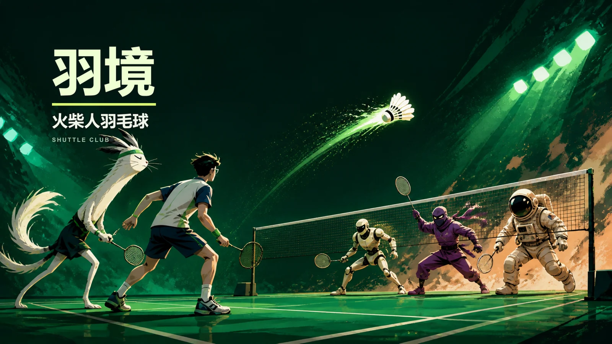
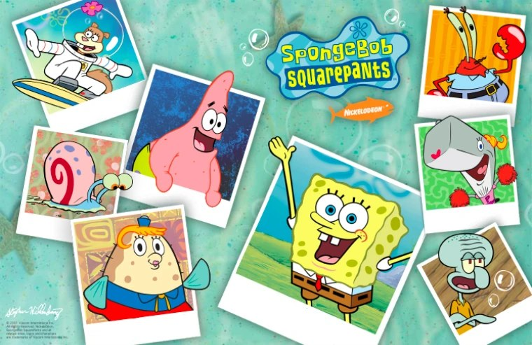

ABOUT ME / 01—03
ChenC
学习、生活与创造，
在这里相遇。
这里是我的数字花园。我会记录正在学习的知识、生活中的小事，以及从想法到成品的创作过程。希望这些内容和作品也能给你一点灵感。
阅读我的文章翻开我的三个章节
WORKS & PRODUCTS
好奇心，
有了作品。
为日常做的工具，为想象打开的世界。
这些作品，是学习与创造留下的另一种笔记。
02 网站 / 02 工具 / 04 游戏
WEBSITES
一个网站。
许多正在发生的故事。
文章搜索与分类 · 作品与下载 · 音乐播放器 · 互动山水
TOOLS FOR LEARNING & LIFE
小工具。
解决身边的真问题。
从一次复习，
一篇笔记开始。
多书知识问答台
找到答案，
也找到出处。
用语义检索串起教材里的知识点。章节引用和关联内容，让每一次提问都能继续深入。
检索流程示意
我想理解一个知识点。
找到相关解释，再沿着关联知识继续探索。
需要核对？回到教材章节，查看回答依据。
你的问题 → 语义检索 → 知识点与章节引用
一个新知识点
到一篇文章。
GAMES & IMAGINATION
打开游戏。
进入另一种可能。
历史的抉择、球场的下一拍，
还有熟悉海底世界里的小冒险。
大明风华录 · 山河一统
以你的抉择，
书写山河。
统筹钱粮，任命文武，调兵征战。
从元末明初出发，在原创单人大战略中走出自己的路线。


THE COLLECTION
找到你感兴趣的那个。
全部 8 个作品
本站可访问
ChenC
学习笔记、生活故事与项目作品，在一个数字花园里相遇。苍山洱海风景支持水面互动、明暗主题与音乐播放。
个人主站
产品详情
山海之间，记录日常。
- 博客搜索与学习 / 生活分类
- 日志时间线与独立文章页
- 互动山水、音乐播放器和明暗主题
公开在线体验与下载
ChenC 游戏站
集中体验羽境与大明风华录的网页完整版，也可下载对应的 Windows 成品。与个人主站一起，连接游戏介绍、试玩和下载。
羽境 v1.3.2 · 大明风华录 v2.1.0
产品详情
打开网页，把游戏带到你面前。
- 羽境 v1.3.2 网页完整版与 Windows 下载
- 大明风华录 v2.1.0 网页完整版与 Windows 下载
- Windows 版可离线游玩
完整版可试玩与下载
大明风华录 · 山河一统
从元末明初出发，在原创单人大战略中统筹钱粮、任命文武、经营辖区与调兵征战。v2.1.0 加入华夏剧本库、靖难之役与秦篇，网页完整版与 Windows 版均已提供。
v2.1.0 · 网页 / Windows
产品详情
以你的抉择，书写山河。
- 40 个战略辖区，建设、科研与军队统将
- 历史主线与分支事件影响战役路线
- v2.1.0 剧本库、靖难之役与秦篇
- 网页完整版、Windows 成品和项目文件夹中的离线 HTML
游戏站已提供 v2.1.0 网页与 Windows 成品，历史疆界与数值为游戏化设计，作品仍为可玩原型。
下载 Windows 版完整版可试玩与下载
羽境 · 火柴人羽毛球
在 2D 球场上移动、跳跃、挥拍与扣杀。故事与冒险两种模式，多种角色，支持键盘和触屏按钮。
v1.3.2 · 网页 / Windows
产品详情
下一拍，轮到你。
- 故事模式与冒险模式
- 键盘移动、跳跃、发球、挥拍与扣杀
- 单文件 HTML 与 Windows 启动版可离线运行
游戏站已提供 v1.3.2 网页与 Windows 成品，冒险模式按实际得分判定胜负；故事模式包含剧情比分设计。
下载 Windows 版公开在线体验
海底塔防
海绵宝宝大战僵尸鱼的独立在线塔防项目：在比奇堡布置伙伴，抵御僵尸鱼。
独立在线项目
产品详情
伙伴就位，守住每一波。
- 海底主题塔防玩法
- 布置伙伴抵御僵尸鱼
- 独立网站，可公开访问
此项目与本站海绵宝宝网页小游戏为独立入口。
A LITTLE HELP TO START
从哪里开始？
按你的兴趣来。
想学习，想玩一会儿，
还是只是随便看看，都有一个入口。
想体验学习和效率工具？
复习教材，可以打开多书知识问答台。如果你用 Obsidian 写笔记，可以按说明安装 Note to Site，将笔记转成文章 HTML。
哪些游戏现在就能玩？
本站海绵宝宝小游戏与独立在线塔防项目可直接体验。ChenC 游戏站提供羽境 v1.3.2 和大明风华录 v2.1.0 的网页完整版及 Windows 下载；Windows 版支持离线游玩。
本地版本和线上版本有什么区别？
羽境和大明风华录的网页入口可直接在浏览器中游玩，Windows 下载版便于离线运行。介绍页连接主站与游戏站的实际入口，网页直接试玩，Windows 版支持离线游玩。
想读文章，或者了解创作过程？
回到ChenC 博客，可以按学习和生活分类阅读，使用搜索查找文章。问答台附有开发记录，笔记工具附有使用说明；日志中也保留了网站和项目的更新过程。
下一次好奇，
也许就是下一个作品。
关于学习、生活与创造的故事，还在继续。
读读最近写下的 ↗作品持续更新，功能与版本以实际作品页面为准。工具界面为功能示意。